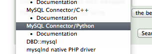
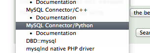

In addition to reporting MySQL Connector/Python bugs on Launchpad, it is now also possible to enter them using http://bugs.mysql.com.

In addition to reporting MySQL Connector/Python bugs on Launchpad, it is now also possible to enter them using http://bugs.mysql.com.

Comments
Hi Geert -
Was poking around, MySQL-Connector Python does not appear to be present on the Python package index (http://pypi.python.org/pypi) - a search for “MySQL Connector Python” as well as “myconnpy” shows up nothing, couldn’t see it within the list of packages matching “mysql” overall. Shouldn’t there be a record on pypi for those who are attempting to locate this library ? At the very least the record can point to the MySQL connector/python page on launchpad, if not have a download file available directly.